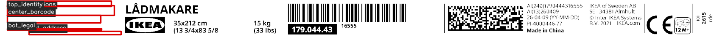

Verdict: INVALID | Final score: 0.0000 (global threshold 0.8800)
Product: 1C50-CAA
Candidate PDF:/Users/sundari/Desktop/ikea-template-cropping/visual-validation/data/labels/label (2).pdf
Template PDF:/Users/sundari/Desktop/ikea-template-cropping/visual-validation/data/templates/ground-truth-ikea-labels/ground_truth/templates/1C50-CAA/v1/label.pdf
— version v1
Region schema: auto-generated
Template JSON:/Users/sundari/Desktop/ikea-template-cropping/visual-validation/data/templates/ground-truth-ikea-labels/ground_truth/templates/1C50-CAA/v1/template.json
Template PNG:/Users/sundari/Desktop/ikea-template-cropping/visual-validation/data/templates/ground-truth-ikea-labels/ground_truth/templates/1C50-CAA/v1/label.png
Regions: 5 total | mandatory passed 0, failed 5 | optional ignored 0
Config: /Users/sundari/Desktop/ikea-template-cropping/visual-validation/outputs/generated_regions/1C50-CAA_v1.json
| Name | Type | Method | Score | Threshold | Status | Mandatory | Weight | Notes | Details |
|---|---|---|---|---|---|---|---|---|---|
| center_barcode | text_block | text_layout_outlined | 0.0000 | 0.8500 | FAIL | yes | 1.0000 | candidate_text_outlined; region_appears_empty | {"dark_frac": 0.0, "edge_frac": 0.0} |
| bot_address | barcode_block | barcode_presence | 0.0000 | 0.8500 | FAIL | yes | 1.0000 | no_barcode_content; low_dark_frac:0.0000; low_edge_frac:0.0000 | {"dark_frac": 0.0, "edge_frac": 0.0} |
| bot_legal | text_block | text_layout_outlined | 0.0000 | 0.8500 | FAIL | yes | 1.0000 | candidate_text_outlined; region_appears_empty | {"dark_frac": 0.0, "edge_frac": 0.0} |
| mid_dimensions | text_block | text_layout_outlined | 0.0000 | 0.8500 | FAIL | yes | 1.0000 | candidate_text_outlined; region_appears_empty | {"dark_frac": 0.0, "edge_frac": 0.0} |
| top_identity | text_block | text_layout_outlined | 0.0000 | 0.8500 | FAIL | yes | 1.0000 | candidate_text_outlined; region_appears_empty | {"dark_frac": 0.0, "edge_frac": 0.0} |
— none —
center_barcode, bot_address, bot_legal, mid_dimensions, top_identity
Green = PASS, red = FAIL, cyan = OPTIONAL.
